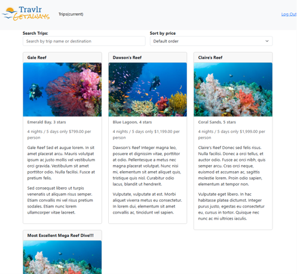
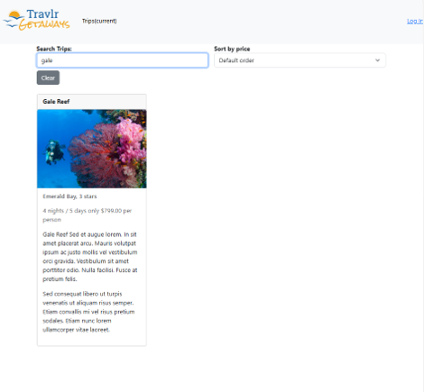
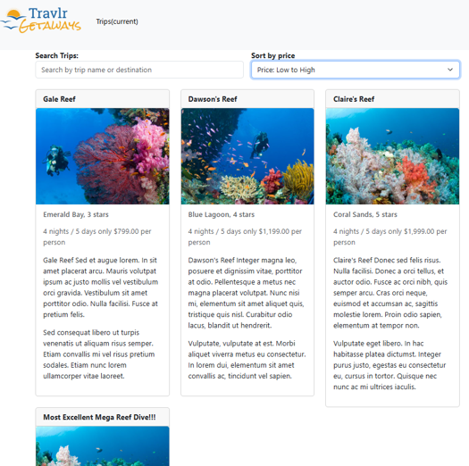
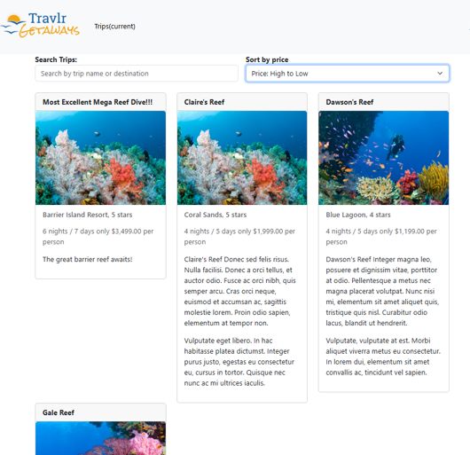

Algorithms and Data Structures
This enhancement focuses on improving the usability of the Travlr Getaways application by introducing trip searching and price-sorting functionality using Angular and TypeScript.
The original application displayed available travel packages without providing convenient options for locating or organizing specific trips. I enhanced the trip listing component to allow users to search for trips by name and sort the results by price in ascending or descending order.
The implementation uses TypeScript array operations to process trip information on the client side. Separate arrays maintain the original trip collection and the filtered results, allowing search and sorting operations without permanently modifying the original data.
Enhancement 2 Narrative
Artifact Description
The artifact selected for this enhancement is Travlr Getaways, a full-stack travel application originally developed during CS-465. The application uses the MEAN stack (MongoDB, Express.js, Angular, and Node.js) to manage and display travel packages. I selected the Angular trip listing component for this enhancement because it provided an opportunity to improve how users interact with trip information.
Justification for Inclusion
I included this artifact in my ePortfolio because it demonstrates my ability to apply algorithmic principles and data structures to an existing application. I implemented trip searching and price sorting using TypeScript array operations. The search feature allows users to locate trips by name, while the sorting feature organizes results by price in ascending or descending order.
To support these operations, I maintained separate arrays for the original trip data and the filtered results. This approach allows users to change their search and sorting selections without permanently modifying the original trip collection. I chose a client-side implementation because it addressed the application's requirements without introducing unnecessary complexity.
Course Outcomes
This enhancement supports the course outcome focused on designing and evaluating computing solutions using algorithmic principles and appropriate computer science practices. By implementing search and sorting functionality, I demonstrated how data processing techniques can improve application usability while considering maintainability and design trade-offs.
Reflection
Completing this enhancement helped me better understand how arrays and conditional logic can be used to manipulate and display application data. One challenge was ensuring that searching and sorting worked together without unexpectedly changing the original trip collection. Maintaining separate arrays helped me organize the filtering logic and preserve the original data.
This experience reinforced the importance of testing multiple user interactions, including applying search terms, changing sorting options, and clearing filters. It also showed me that relatively small improvements can make an existing application more functional and user-friendly.
Source Code and Enhancement
The links below provide access to the original Travlr Getaways application and the changes implemented for Enhancement 2.
Original Artifact
The original CS-465 application provides the foundation for the enhancements completed during my CS-499 capstone.
View Original ArtifactEnhancement 2: Algorithms and Data Structures
This enhancement introduces client-side trip searching and price sorting using Angular and TypeScript. These features allow users to locate specific travel packages and organize results by price in ascending or descending order.
View Enhancement 2 CodeTesting and Validation
Trip Search Testing
I tested the trip search functionality by entering trip names into the search field and verifying that the displayed results matched the search criteria. The search feature uses TypeScript array filtering to identify matching trips without modifying the original trip collection.
Price Sorting Testing
I tested the sorting functionality by selecting ascending and descending price options. The application reorganized the displayed trips based on their per-person prices, allowing users to compare travel packages from lowest to highest or highest to lowest.
Combined Search and Sorting
I also tested the interaction between searching and sorting to verify that both features could operate together. Applying a search term reduced the displayed trip collection, while selecting a sorting option organized the matching results by price.
Clear and Reset Functionality
Finally, I tested the Clear functionality to ensure users could remove their search criteria and return to the original trip listing. These tests helped verify that the new features improved usability without affecting the underlying trip data.
Testing Screenshots
The following screenshots document the search, sorting, and reset functionality implemented during Enhancement 2.
Trip Search Functionality
This section demonstrates how the application filters travel packages based on a trip name entered by the user.


Price Sorting Functionality
These screenshots demonstrate how users can sort travel packages from lowest to highest price or highest to lowest price.

